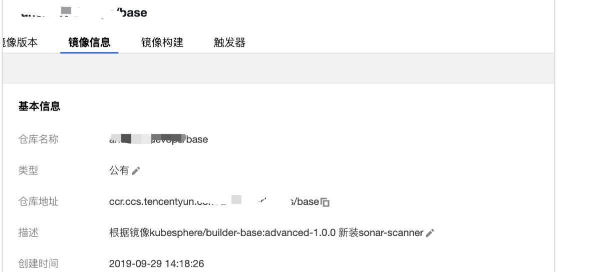
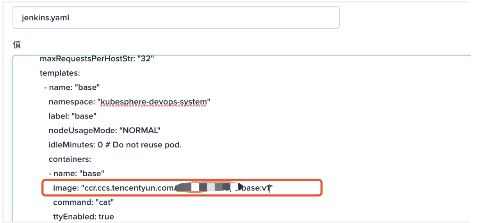
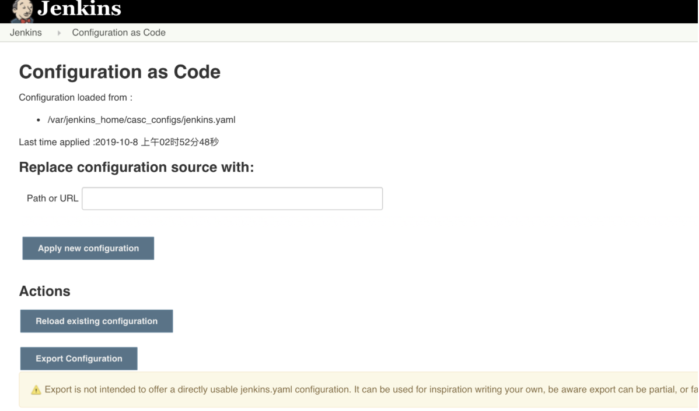
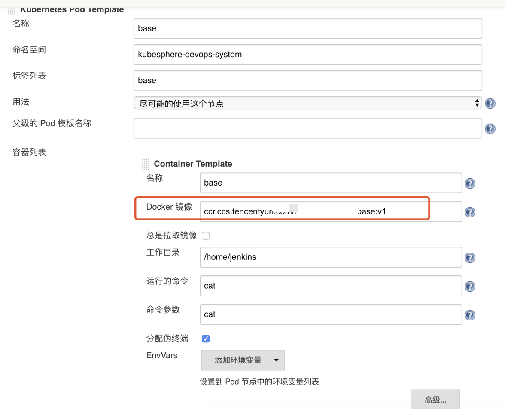

二十四 国产容器管理平台KubeSphere实战排错
概述：近期在使用QingCloud的Kubesphere，极好的用户体验，私有化部署，无基础设施依赖，无 Kubernetes 依赖，支持跨物理机、虚拟机、云平台部署，可以纳管不同版本、不同厂商的 Kubernetes 集群。在k8s上层进行了封装实现了基于角色的权限控制，DevOPS流水线快速实现CI/CD，内置harbor/gitlab/jenkins/sonarqube等常用工具，基于基于 OpenPitrix 提供应用的全生命周期管理，包含开发、测试、发布、升级，下架等应用相关操作自己体验还是非常的棒。 同样作为开源项目，难免存在一些bug，在自己的使用中遇到下排错思路，非常感谢qingcloud社区提供的技术协助，对k8s有兴趣的可以去体验下国产的平台，如丝般顺滑的体验，rancher的用户也可以来对不体验下。
24.1 清理退出状态的容器
在集群运行一段时间后，有些container由于异常状态退出Exited，需要去及时清理释放磁盘，可以将其设置成定时任务执行
24.2 清理异常或被驱逐的 pod
- 清理kubesphere-devops-system的ns下清理
kubectl delete pods -n kubesphere-devops-system $(kubectl get pods -n kubesphere-devops-system | grep Evicted |awk '{print $1}')
kubectl delete pods -n kubesphere-devops-system $(kubectl get pods -n kubesphere-devops-system | grep CrashLoopBackOff |awk '{print $1}')
- 为方便清理指定ns清理evicted/crashloopbackoff的pod/清理exited的容器
#!/bin/bash
# auth:kaliarch
clear_evicted_pod() {
ns=$1
kubectl delete pods -n ${ns} $(kubectl get pods -n ${ns} | grep Evicted |awk '{print $1}')
}
clear_crash_pod() {
ns=$1
kubectl delete pods -n ${ns} $(kubectl get pods -n ${ns} | grep CrashLoopBackOff |awk '{print $1}')
}
clear_exited_container() {
docker rm `docker ps -a | grep Exited |awk '{print $1}'`
}
echo "1.clear exicted pod"
echo "2.clear crash pod"
echo "3.clear exited container"
read -p "Please input num:" num
case ${num} in
"1")
read -p "Please input oper namespace:" ns
clear_evicted_pod ${ns}
;;
"2")
read -p "Please input oper namespace:" ns
clear_crash_pod ${ns}
;;
"3")
clear_exited_container
;;
"*")
echo "input error"
;;
esac
- 清理全部ns中evicted/crashloopbackoff的pod
# 获取所有ns
kubectl get ns | grep -v "NAME" |awk '{print $1}'
# 清理驱逐状态的pod
for ns in `kubectl get ns | grep -v "NAME" | awk '{print $1}'`;do kubectl delete pods -n ${ns} $(kubectl get pods -n ${ns} | grep "Evicted" |awk '{print $1}');done
# 清理异常pod
for ns in `kubectl get ns | grep -v "NAME" | awk '{print $1}'`;do kubectl delete pods -n ${ns} $(kubectl get pods -n ${ns} | grep "CrashLoopBackOff" |awk '{print $1}');done
24.3 Docker 数据迁移
在安装过程中未指定docker数据目录，系统盘50G，随着时间推移磁盘不够用，需要迁移docker数据，使用软连接方式： 首选挂载新磁盘到/data目录
systemctl stop docker
mkdir -p /data/docker/
rsync -avz /var/lib/docker/ /data/docker/
mv /var/lib/docker /data/docker_bak
ln -s /data/docker /var/lib/
systemctl daemon-reload
systemctl start docker
24.4 kubesphere 网络排错
- 问题描述：
在kubesphere的node节点或master节点，手动去启动容器，在容器里面无法连通公网，是我的配置哪里不对么，之前默认使用calico，现在改成fluannel也不行，在kubesphere中部署deployment中的pod的容器上可以出公网，在node或master单独手动启动的访问不了公网
查看手动启动的容器网络上走的docker0
root@fd1b8101475d:/# ip a
1: lo: <LOOPBACK,UP,LOWER_UP> mtu 65536 qdisc noqueue state UNKNOWN group default qlen 1
link/loopback 00:00:00:00:00:00 brd 00:00:00:00:00:00
inet 127.0.0.1/8 scope host lo
valid_lft forever preferred_lft forever
2: tunl0@NONE: <NOARP> mtu 1480 qdisc noop state DOWN group default qlen 1
link/ipip 0.0.0.0 brd 0.0.0.0
105: eth0@if106: <BROADCAST,MULTICAST,UP,LOWER_UP> mtu 1500 qdisc noqueue state UP group default
link/ether 02:42:ac:11:00:02 brd ff:ff:ff:ff:ff:ff link-netnsid 0
inet 172.17.0.2/16 brd 172.17.255.255 scope global eth0
valid_lft forever preferred_lft forever
在pods中的容器网络用的是kube-ipvs0
1: lo: <LOOPBACK,UP,LOWER_UP> mtu 65536 qdisc noqueue qlen 1
link/loopback 00:00:00:00:00:00 brd 00:00:00:00:00:00
inet 127.0.0.1/8 scope host lo
valid_lft forever preferred_lft forever
2: tunl0@NONE: <NOARP> mtu 1480 qdisc noop qlen 1
link/ipip 0.0.0.0 brd 0.0.0.0
4: eth0@if18: <BROADCAST,MULTICAST,UP,LOWER_UP,M-DOWN> mtu 1500 qdisc noqueue
link/ether c2:27:44:13:df:5d brd ff:ff:ff:ff:ff:ff
inet 10.233.97.175/32 scope global eth0
valid_lft forever preferred_lft forever
- 解决方案：
查看docker启动配置

修改文件/etc/systemd/system/docker.service.d/docker-options.conf中去掉参数：--iptables=false 这个参数等于false时会不写iptables
[Service]
Environment="DOCKER_OPTS= --registry-mirror=https://registry.docker-cn.com --data-root=/var/lib/docker --log-opt max-size=10m --log-opt max-file=3 --insecure-registry=harbor.devops.kubesphere.local:30280"
24.5 kubesphere 应用路由异常
在kubesphere中应用路由ingress使用的是nginx，在web界面配置会导致两个host使用同一个ca证书，可以通过注释文件配置
⚠️注意：ingress控制deployment在：

kind: Ingress
apiVersion: extensions/v1beta1
metadata:
name: prod-app-ingress
namespace: prod-net-route
resourceVersion: '8631859'
labels:
app: prod-app-ingress
annotations:
desc: 生产环境应用路由
nginx.ingress.kubernetes.io/client-body-buffer-size: 1024m
nginx.ingress.kubernetes.io/proxy-body-size: 2048m
nginx.ingress.kubernetes.io/proxy-read-timeout: '3600'
nginx.ingress.kubernetes.io/proxy-send-timeout: '1800'
nginx.ingress.kubernetes.io/service-upstream: 'true'
spec:
tls:
- hosts:
- smartms.tools.anchnet.com
secretName: smartms-ca
- hosts:
- smartsds.tools.anchnet.com
secretName: smartsds-ca
rules:
- host: smartms.tools.anchnet.com
http:
paths:
- path: /
backend:
serviceName: smartms-frontend-svc
servicePort: 80
- host: smartsds.tools.anchnet.com
http:
paths:
- path: /
backend:
serviceName: smartsds-frontend-svc
servicePort: 80
24.6 Jenkins 的 Agent
用户在自己的使用场景当中，可能会使用不同的语言版本活不同的工具版本。这篇文档主要介绍如何替换内置的 agent。
默认base-build镜像中没有sonar-scanner工具，Kubesphere Jenkins 的每一个 agent 都是一个Pod，如果要替换内置的agent，就需要替换 agent 的相应镜像。
构建最新 kubesphere/builder-base:advanced-1.0.0 版本的 agent 镜像
更新为指定的自定义镜像：ccr.ccs.tencentyun.com/testns/base:v1
参考链接：https://kubesphere.io/docs/advanced-v2.0/zh-CN/devops/devops-admin-faq/#%E5%8D%87%E7%BA%A7-jenkins-agent-%E7%9A%84%E5%8C%85%E7%89%88%E6%9C%AC  
{kind=link}
{kind=link}
在 KubeSphere 修改 jenkins-casc-config 以后，您需要在 Jenkins Dashboard 系统管理下的 configuration-as-code 页面重新加载您更新过的系统配置。
参考：
https://kubesphere.io/docs/advanced-v2.0/zh-CN/devops/jenkins-setting/#%E7%99%BB%E9%99%86-jenkins-%E9%87%8D%E6%96%B0%E5%8A%A0%E8%BD%BD 
{kind=link}
jenkins中更新base镜像 
{kind=link}
⚠️先修改kubesphere中jenkins的配置，jenkins-casc-config
24.7 Devops 中 Mail的发送
参考：https://www.cloudbees.com/blog/mail-step-jenkins-workflow
内置变量：
| 变量名 | 解释 |
|---|---|
| BUILD_NUMBER | The current build number, such as "153" |
| BUILD_ID | The current build ID, identical to BUILD_NUMBER for builds created in 1.597+, but a YYYY-MM-DD_hh-mm-ss timestamp for older builds |
| BUILD_DISPLAY_NAME | The display name of the current build, which is something like "#153" by default. |
| JOB_NAME | Name of the project of this build, such as "foo" or "foo/bar". (To strip off folder paths from a Bourne shell script, try: ${JOB_NAME}) |
| BUILD_TAG | String of "jenkins-${JOB_NAME}-${BUILD_NUMBER}". Convenient to put into a resource file, a jar file, etc for easier identification. |
| EXECUTOR_NUMBER | The unique number that identifies the current executor (among executors of the same machine) that’s carrying out this build. This is the number you see in the "build executor status", except that the number starts from 0, not 1. |
| NODE_NAME | Name of the slave if the build is on a slave, or "master" if run on master |
| NODE_LABELS | Whitespace-separated list of labels that the node is assigned. |
| WORKSPACE | The absolute path of the directory assigned to the build as a workspace. |
| JENKINS_HOME | The absolute path of the directory assigned on the master node for Jenkins to store data. |
| JENKINS_URL | Full URL of Jenkins, like http://server:port/jenkins/ (note: only available if Jenkins URL set in system configuration) |
| BUILD_URL | Full URL of this build, like http://server:port/jenkins/job/foo/15/ (Jenkins URL must be set) |
| SVN_REVISION | Subversion revision number that's currently checked out to the workspace, such as "12345" |
| SVN_URL | Subversion URL that's currently checked out to the workspace. |
| JOB_URL | Full URL of this job, like http://server:port/jenkins/job/foo/ (Jenkins URL must be set) |
最终自己写了适应自己业务的模版，可以直接使用
mail to: 'xuel@net.com',
charset:'UTF-8', // or GBK/GB18030
mimeType:'text/plain', // or text/html
subject: "Kubesphere ${env.JOB_NAME} [${env.BUILD_NUMBER}] 发布正常Running Pipeline: ${currentBuild.fullDisplayName}",
body: """
---------Anchnet Devops Kubesphere Pipeline job--------------------
项目名称 : ${env.JOB_NAME}
构建次数 : ${env.BUILD_NUMBER}
扫描信息 : 地址:${SONAR_HOST}
镜像地址 : ${REGISTRY}/${QHUB_NAMESPACE}/${APP_NAME}:${IMAGE_TAG}
构建详情：SUCCESSFUL: Job ${env.JOB_NAME} [${env.BUILD_NUMBER}]
构建状态 : ${env.JOB_NAME} jenkins 发布运行正常
构建URL : ${env.BUILD_URL}"""
{kind=link}
{kind=link}
24.8 kubesphere应用上传问题
24.8.1 文件上传413
将应用部署进入kubesphere中，应用中有设置上传文件功能，测试上次异常无法正常上传，文件上传，ingress413报错，kubesphere使用的是ingress-nginx控制器，可以在其中注解添加k-v来支持，
解决方案：应用路由自定义max body size
https://kubernetes.github.io/ingress-nginx/user-guide/nginx-configuration/annotations/#custom-max-body-size
24.8.2 大文件上传后端504
大文件上传后端响应504解决方案：
24.9 跨域问题
kubesphere使用ingress-nginx支持跨域，可以参考以下链接在注解中添加
https://kubernetes.github.io/ingress-nginx/user-guide/nginx-configuration/annotations/#enable-cors
测试环境可以使用可以使用hosts，将域名解析到本地，前端利用nginx来做静态文件服务，反向代理后端api，可以参考示例：
server {
listen 80;
server_name localhost;
# 强制https跳转
# rewrite ^(.*)$ https://$host$1 permanent;
location / {
index index.html;
root /smart-frontend;
try_files $uri $uri/ /index.html;
client_body_buffer_size 200m;
charset utf-8;
}
location /api {
proxy_pass http://smart-backend:8080/api;
proxy_read_timeout 1200;
client_max_body_size 1024m;
}
gzip on; #开启gzip
gzip_vary on;
gzip_min_length 1k; #不压缩临界值,大于1k的才压缩,一般不用改
gzip_buffers 4 16k;
gzip_comp_level 6; #压缩级别,数字越大压缩的越好
gzip_types text/plain application/javascript application/x-javascript text/css application/xml text/javascript application/x-httpd-php image/jpeg image/gif image/png image/x-icon;
}
24.10 添加节点
后期逐渐业务上来，集群节点资源不足，新增node节点，将node节点的数据盘添加到ceph节点
24.10.1 ceph集群添加节点
-
系统配置
-
免费密钥配置
- hosts配置
- docker安装并迁移至数据盘
- cgroup启用
- ceph数据节点添加
ceph集群配置添加node03集群的数据盘节点（如果数据存储类足够，可以不用添加数据节点）
[root@node03 docker]# mkfs.xfs /dev/vdd
[root@node03 docker]# mkdir -p /var/local/osd3
[root@node03 docker]# mount /dev/vdd /var/local/osd3/
添加vdd到/etc/fstab中
[root@node03 docker]# yum -y install yum-plugin-priorities epel-release
[root@node03 yum.repos.d]# chmod 777 -R /var/local/osd3/
[root@node03 yum.repos.d]# chmod 777 -R /var/local/osd3/* master节点利用ceph-deploy部署node03节点[root@master ceph]# ceph-deploy install node03
[root@master ceph]# ceph-deploy gatherkeys master
[root@master ceph]# ceph-deploy osd prepare node03:/var/local/osd3
- 激活osd
- 查看状态
- 拷贝密钥
- 在node03节点设置权限
- 在master设置MDS
- 查看状态
[root@master ceph]# ceph health
[root@master ceph]# ceph - 由于是新增node节点，数据需要平衡回填，此刻查看集群状态[root@master conf]# ceph -s
cluster 5b9eb8d2-1c12-4f6d-ae9c-85078795794b
health HEALTH_ERR
44 pgs backfill_wait
1 pgs backfilling
1 pgs inconsistent
45 pgs stuck unclean
recovery 1/55692 objects degraded (0.002%)
recovery 9756/55692 objects misplaced (17.518%)
2 scrub errors
monmap e1: 1 mons at {master=172.16.60.2:6789/0}
election epoch 35, quorum 0 master
osdmap e2234: 4 osds: 4 up, 4 in; 45 remapped pgs
flags sortbitwise,require_jewel_osds
pgmap v5721471: 192 pgs, 2 pools, 104 GB data, 27846 objects
230 GB used, 1768 GB / 1999 GB avail
1/55692 objects degraded (0.002%)
9756/55692 objects misplaced (17.518%)
146 active+clean
44 active+remapped+wait_backfill
1 active+remapped+backfilling
1 active+clean+inconsistent
recovery io 50492 kB/s, 13 objects/s
client io 20315 B/s wr, 0 op/s rd, 5 op/s wr
- 最终的问题，目前由于新增了node节点，新增ceph数据节点需要数据同步
[root@master conf]# ceph -s
cluster 5b9eb8d2-1c12-4f6d-ae9c-85078795794b
health HEALTH_ERR
1 pgs inconsistent
2 scrub errors
monmap e1: 1 mons at {master=172.16.60.2:6789/0}
election epoch 35, quorum 0 master
osdmap e2324: 4 osds: 4 up, 4 in
flags sortbitwise,require_jewel_osds
pgmap v5723479: 192 pgs, 2 pools, 104 GB data, 27848 objects
229 GB used, 1769 GB / 1999 GB avail
191 active+clean
1 active+clean+inconsistent
client io 78305 B/s wr, 0 op/s rd, 18 op/s wr修复[root@master conf]# ceph -s
cluster 5b9eb8d2-1c12-4f6d-ae9c-85078795794b
health HEALTH_OK
monmap e1: 1 mons at {master=172.16.60.2:6789/0}
election epoch 35, quorum 0 master
osdmap e2324: 4 osds: 4 up, 4 in
flags sortbitwise,require_jewel_osds
pgmap v5724320: 192 pgs, 2 pools, 104 GB data, 27848 objects
229 GB used, 1769 GB / 1999 GB avail
192 active+clean
client io 227 kB/s wr, 0 op/s rd, 7 op/s wr
# 同步完成
[root@master conf]# ceph health
HEALTH_OK
24.10.2 node节点添加
kubesphere为方便新增节点，提供了方便的脚步一键新增，可参考：https://kubesphere.com.cn/docs/v2.1/zh-CN/installation/add-nodes/
修改host.ini
```[all]
master ansible_connection=local ip=172.16.60.2
node01 ansible_host=172.16.60.3 ip=172.16.60.3
node02 ansible_host=172.16.60.4 ip=172.16.60.4
node03 ansible_host=172.16.60.5 ip=172.16.60.5
[kube-master]
master
[kube-node]
master
node01
node02
node03
在 "/script" 目录执行 add-nodes.sh脚本。待扩容脚本执行成功后，即可看到包含新节点的集群节点信息，可通过 KubeSphere 控制台的菜单选择 基础设施 然后进入 主机管理 页面查看，或者通过 Kubectl 工具执行 kubectl get node命令，查看扩容后的集群节点详细信息。
```shell
[root@master scripts]# ./add-nodes.sh
查看验证
[root@master conf]# kubectl get nodes -owide
NAME STATUS ROLES AGE VERSION INTERNAL-IP EXTERNAL-IP OS-IMAGE KERNEL-VERSION CONTAINER-RUNTIME
master Ready master 136d v1.15.5 172.16.60.2 <none> CentOS Linux 7 (Core) 3.10.0-693.el7.x86_64 docker://18.6.2
node01 Ready node,worker 136d v1.15.5 172.16.60.3 <none> CentOS Linux 7 (Core) 3.10.0-693.el7.x86_64 docker://18.6.2
node02 Ready node,worker 136d v1.15.5 172.16.60.4 <none> CentOS Linux 7 (Core) 3.10.0-693.el7.x86_64 docker://18.6.2
node03 Ready worker 10m v1.15.5 172.16.60.5 <none> CentOS Linux 7 (Core) 3.10.0-693.el7.x86_64 docker://19.3.5
[root@master conf]# kubectl label node node-role.kubernetes.io/node=
common.yaml hosts.ini plugin-qingcloud.yaml
[root@master conf]# kubectl label node node03 node-role.kubernetes.io/node=
node/node03 labeled
[root@master conf]# kubectl get nodes -owide
NAME STATUS ROLES AGE VERSION INTERNAL-IP EXTERNAL-IP OS-IMAGE KERNEL-VERSION CONTAINER-RUNTIME
master Ready master 136d v1.15.5 172.16.60.2 <none> CentOS Linux 7 (Core) 3.10.0-693.el7.x86_64 docker://18.6.2
node01 Ready node,worker 136d v1.15.5 172.16.60.3 <none> CentOS Linux 7 (Core) 3.10.0-693.el7.x86_64 docker://18.6.2
node02 Ready node,worker 136d v1.15.5 172.16.60.4 <none> CentOS Linux 7 (Core) 3.10.0-693.el7.x86_64 docker://18.6.2
node03 Ready node,worker 11m v1.15.5 172.16.60.5 <none> CentOS Linux 7 (Core) 3.10.0-693.el7.x86_64 docker://19.3.5
[root@master conf]#

24.11 K8s集群资源不均
可以发现k8s资源使用不均衡，之前的部署应用为制定nodeSelect，导致一些系统服务运行在node节点，查看node2内存占用很大,导致集群异常告警或重启

可以通过查看
将一些系统应用通过nodeselect来调度到master节点，以减轻node2节点的内存压力。
在node2上查看系统组建添加nodeselector来重新调度

查看现存在node2上面的kubesphere系统deployment

通过调度完成，查看node2的内存负载已经下来了

24.12 kubesphere devops工程
新增了node03节点，devops工程一周为队列中为此时运行该job的实例未完成初始化，登录集群查看，node03上的base pod在pull agent镜像，为了快速，直接在node节点，save base镜像然后在node03上load

[root@master ~]# kubectl describe pods -n kubesphere-devops-system $(kubectl get pods -n kubesphere-devops-system |grep -E "^base" |awk '{print $1}')

24.13 kubesphere 应用安装
目前自己的kubesphere集群为2.1，在具体的在项目中添加了repo后，后台回自己去同步镜像数据还是需要为手动在那个地方触发下，我添加了几个helm 的repo，好像里面的chart没有在web界面显示，在添加了repo的项目下，我新建应用，然后选择来自kubesphere的应用商店，其中只有几个charts，发现不了添加的helm 源的chartscharts，在服务器内部是可以使用命令search到。咨询社区暂时为收到回复，记得v2.0版本后台有个任务会去同步charts，目前2.1版本，先使用helm命令在集群内进行手动helm安装
[root@master common-service]# helm install -n consul --namespace common-service -f consul/values-production.yaml consul/
NAME: consul
LAST DEPLOYED: Tue Jan 14 17:56:27 2020
NAMESPACE: common-service
STATUS: DEPLOYED
RESOURCES:
==> v1/Pod(related)
NAME READY STATUS RESTARTS AGE
consul-0 0/2 Pending 0 0s
==> v1/Service
NAME TYPE CLUSTER-IP EXTERNAL-IP PORT(S) AGE
consul ClusterIP None <none> 8400/TCP,8301/TCP,8301/UDP,8300/TCP,8600/TCP,8600/UDP 1s
consul-ui ClusterIP 10.233.59.7 <none> 80/TCP 1s
==> v1/StatefulSet
NAME READY AGE
consul 0/3 0s
==> v1beta1/PodDisruptionBudget
NAME MIN AVAILABLE MAX UNAVAILABLE ALLOWED DISRUPTIONS AGE
consul-pdb 1 N/A 0 1s
NOTES:
** Please be patient while the chart is being deployed **
Consul can be accessed within the cluster on port 8300 at consul.common-service.svc.cluster.local
In order to access to the Consul Web UI:
kubectl port-forward --namespace common-service svc/consul-ui 80:80
echo "Consul URL: http://127.0.0.1:80"
Please take into account that you need to wait until a cluster leader is elected before using the Consul Web UI.
In order to check the status of the cluster you can run the following command:
kubectl exec -it consul-0 -- consul members
Furthermore, to know which Consul node is the cluster leader run this other command:
kubectl exec -it consul-0 -- consul operator raf
具体问题可以参考帖子：https://kubesphere.com.cn/forum/d/669-kubesphere
参考链接
- Kubernetes官网教程
- Kubernetes中文社区
- 从Kubernetes到Cloud Native
- Kubernetes Handbook
- Kubernetes从入门到实战
- Kubernetes指南
- awesome-kubernetes
- 从Docker到Kubernetes进阶
- python微服务实战
- 云原生之路
- CNCF Cloud Native Interactive Landscape
视频
如果此笔记对您有任何帮助，更多文章，欢迎关注博客一块学习交流👏
请我喝咖啡☕️
- 微信
 )
) - 支付宝